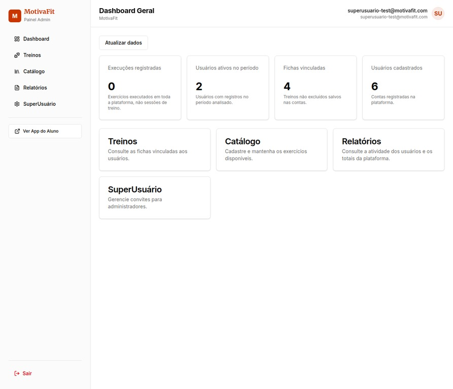
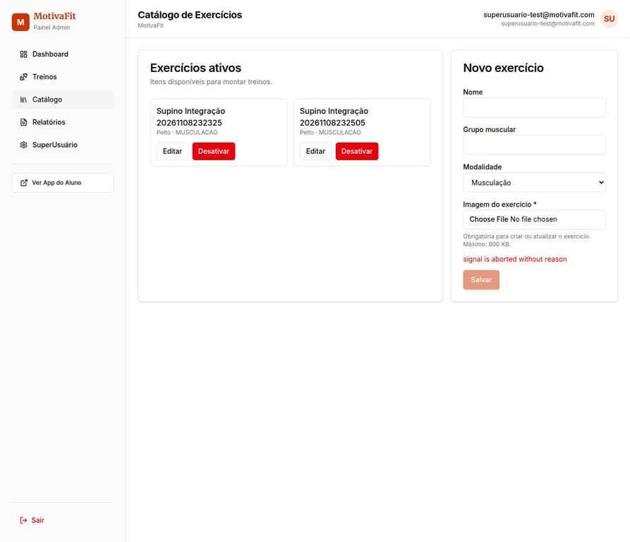
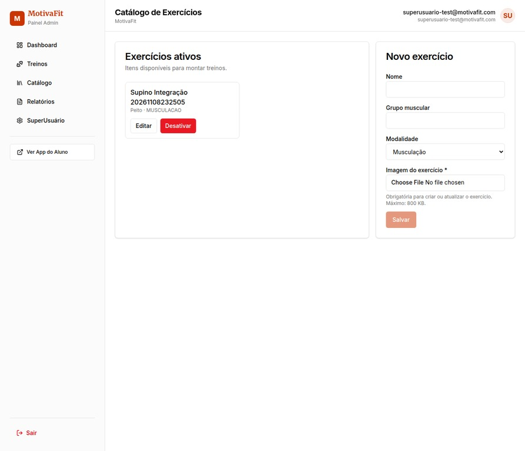
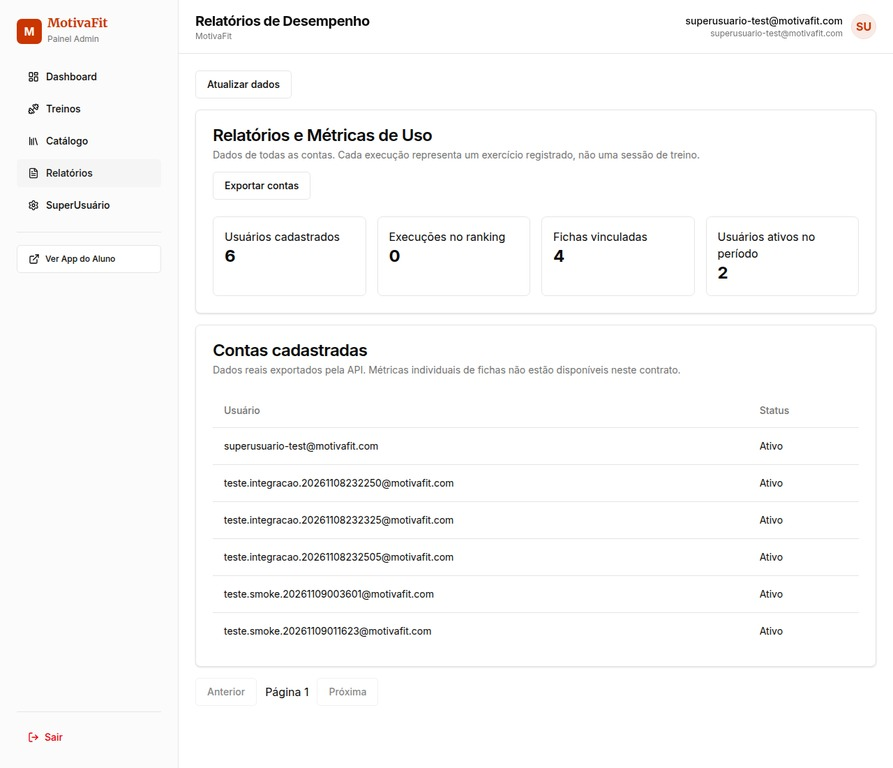
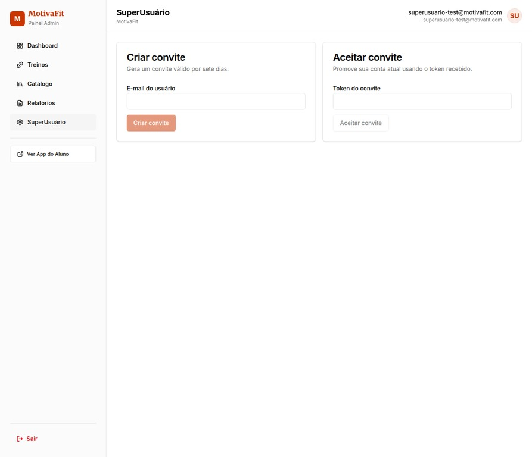
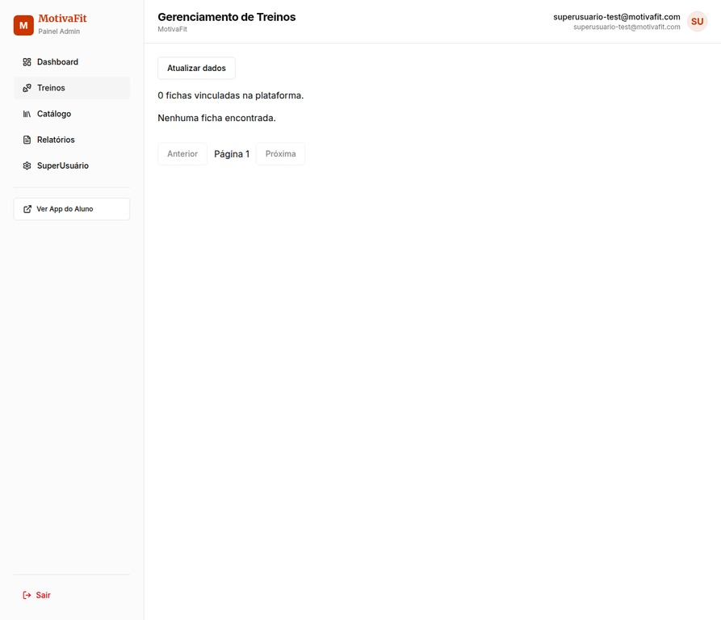

Relatório de testes de integração — MotivaFit¶
Data: 19/11/2026
Escopo: integração do frontend React/Vite com o backend Spring Boot e validação visual/funcional do Painel Admin.
Ambiente: sandbox Linux, PostgreSQL local, backend na porta 8080 e frontend Vite na porta 3000.
Usuário de teste: superusuário criado para homologação; a senha e os tokens não são registrados neste documento.
Atualizado em 23/11/2026
As seções 1 a 8 registram o teste de 19/11/2026 e foram mantidas como evidência. Desde então, o Painel Admin passou a exibir apenas métricas gerais: Dashboard, Relatórios e Treinos não mostram mais contas, e-mails nem treinos individuais, e a rota de exportação de contas foi removida. As capturas das seções 2.1, 2.3 e 2.5 mostram a versão anterior. O comportamento atual e os novos casos estão na seção 9.
1. Resumo executivo¶
A integração foi validada com sucesso pelo fluxo real do navegador: o frontend exibiu a tela de login, enviou as credenciais ao backend, recebeu o JWT e redirecionou para /admin. A partir do painel, as rotas administrativas carregaram dados provenientes da API e uma operação de catálogo foi executada com sucesso.
Durante a primeira tentativa, a interface mostrou “O servidor retornou uma resposta inválida”. A investigação isolou a causa em CORS: o navegador acessa o frontend pelo domínio HTTPS encaminhado do sandbox, enquanto o backend aceitava apenas a origem local http://localhost:3000. Após iniciar o backend de homologação aceitando a origem HTTPS do navegador, o login funcionou sem alteração no contrato da API.
2. Evidências visuais¶
2.1 Dashboard após login administrativo¶
O login foi aprovado e o usuário foi direcionado para /admin. O dashboard apresentou métricas retornadas pelo backend: execuções registradas, usuários ativos, fichas vinculadas e usuários cadastrados.

2.2 Catálogo de exercícios¶
A tela /admin/catalogo carregou exercícios persistidos no backend e exibiu os controles Editar e Desativar. O caso de desativação foi executado sobre um exercício de integração; após a ação, o item deixou de aparecer na lista de exercícios ativos.


2.3 Relatórios¶
A tela /admin/relatorios carregou as métricas e a relação de contas cadastradas pela API (comportamento substituído em 23/11/2026; ver seção 9). Foram exibidos seis usuários ativos no banco de teste, além dos totais de execuções e fichas.

2.4 SuperUsuário¶
A tela /admin/superusuario foi acessada com autorização de superusuário e exibiu as operações de criação e aceitação de convite.

2.5 Gerenciamento de treinos¶
A tela /admin/treinos foi carregada e consultou a API (na época, listava fichas; hoje mostra apenas totais, ver seção 9). Neste estado do banco de homologação não havia fichas vinculadas para listar; a mensagem “Nenhuma ficha encontrada” foi apresentada corretamente.

3. Casos executados¶
| ID | Caso | Procedimento | Resultado | Situação |
|---|---|---|---|---|
| INT-01 | Disponibilidade do backend | Consultar GET /v3/api-docs |
HTTP 200 | Aprovado |
| INT-02 | CORS da origem do navegador | Enviar preflight OPTIONS com a origem HTTPS do frontend | HTTP 200, Access-Control-Allow-Origin correto e credenciais permitidas |
Aprovado após ajuste de ambiente |
| INT-03 | Login pela interface | Preencher e-mail/senha e clicar em “Entrar na conta” | JWT recebido e redirecionamento para /admin |
Aprovado |
| INT-04 | Proteção do painel | Acessar rotas admin com perfil SUPERUSUARIO |
Dashboard e menu administrativo disponíveis | Aprovado |
| INT-05 | Dashboard | Carregar /admin |
Métricas retornadas e renderizadas | Aprovado |
| INT-06 | Catálogo | Carregar /admin/catalogo |
Exercícios do backend renderizados | Aprovado |
| INT-07 | Desativar exercício | Clicar em Desativar em exercício de teste |
Item removido da lista de ativos após atualização | Aprovado |
| INT-08 | Relatórios | Carregar /admin/relatorios |
Métricas e contas cadastradas renderizadas | Aprovado |
| INT-09 | SuperUsuário | Carregar /admin/superusuario |
Formulários de convite renderizados para o perfil autorizado | Aprovado |
| INT-10 | Treinos administrativos | Carregar /admin/treinos |
Consulta concluída e estado vazio tratado sem quebra | Aprovado |
4. Resultado técnico da autenticação¶
O backend retornou um objeto JSON contendo token e expirationAt. O frontend decodificou as claims do JWT e validou os campos necessários (sub, id, ativo, perfil, iat e exp). O perfil recebido foi SUPERUSUARIO, permitindo acesso a todas as rotas administrativas.
A implementação relevante está em frontend/MotivaFit/src/lib/api/auth-api.ts e frontend/MotivaFit/src/lib/auth-context.tsx. A camada de autenticação não depende de identidade armazenada em localStorage; a sessão é mantida pelo token em memória e pelos cookies de refresh/CSRF.
5. Achados e correções de ambiente¶
5.1 CORS no domínio encaminhado¶
A primeira tentativa do navegador resultou em HTTP 403 com o texto Invalid CORS request. A mesma requisição feita localmente com curl retornava HTTP 200, o que demonstrou que o contrato de login estava correto. A diferença era a origem: o navegador utilizava o domínio HTTPS do sandbox.
Para a execução de homologação, o backend foi iniciado com a origem do frontend encaminhado. Em ambiente local no computador do grupo, a configuração equivalente deve aceitar a origem que realmente será usada, normalmente http://localhost:3000, sem liberar origens genéricas em produção.
5.2 Mensagem signal is aborted without reason no formulário de catálogo¶
A tela de catálogo exibiu essa mensagem junto ao formulário de criação, embora a listagem e a desativação tenham funcionado. O formulário exige uma imagem antes de criar ou atualizar um exercício. Como o caso executado foi a desativação de um exercício existente, não foi classificado como falha da integração principal, mas recomenda-se abrir uma tarefa para revisar o tratamento de abort/cancelamento da requisição de upload e exibir uma mensagem mais compreensível ao usuário.
5.3 Marcadores de conflito¶
Foi executada uma busca por <<<<<<<, ======= e >>>>>>> em frontend/MotivaFit/src; nenhum marcador foi encontrado no checkout utilizado para este teste.
6. Classificação dos testes¶
Os casos INT-01 e INT-02 são testes de integração da API com o ambiente de execução. Os casos INT-03 a INT-10 são testes de integração frontend–backend e também possuem caráter de teste de sistema, pois percorrem o produto pela interface e verificam um fluxo administrativo completo.
Os testes de API registrados anteriormente continuam complementares: cobrem cadastro, validações, login, JWT, autorização e CRUD de treinos diretamente pela API. Este relatório acrescenta a evidência que faltava: a requisição sendo disparada pela interface e a resposta sendo refletida nas telas do painel.
7. Como reproduzir¶
- Iniciar o PostgreSQL e configurar o banco de teste conforme o README do projeto.
- Iniciar o backend na porta
8080. - Iniciar o frontend na porta
3000. - Abrir a URL do frontend e acessar
/login. - Usar uma conta de superusuário de homologação.
- Confirmar o redirecionamento para
/admin. - Percorrer Dashboard, Treinos, Catálogo, Relatórios e SuperUsuário.
- No Catálogo, usar um exercício descartável para validar
Desativar. - Para um ambiente encaminhado por HTTPS, configurar CORS com a origem HTTPS efetiva do frontend. Para execução local, usar a origem local efetiva.
Não publicar no GitHub senhas, JWTs, cookies refreshToken/csrfToken, dumps do banco ou arquivos .env com credenciais.
8. Conclusão¶
A comunicação frontend–backend e o acesso ao Painel Admin foram comprovados. O login administrativo, a autorização por perfil, o carregamento de dados do dashboard, catálogo, relatórios, superusuário e treinos, além da desativação de exercício, funcionaram no ambiente de teste. O único bloqueio encontrado foi a configuração de CORS específica do domínio encaminhado; depois de corrigida no ambiente, o fluxo foi aprovado.
9. Atualização de 23/11/2026: painel com métricas gerais¶
9.1 O que mudou¶
O Painel Admin deixou de exibir dados associados a pessoas e passou a mostrar somente valores agregados, vindos das rotas /api/admin/metricas/*.
| Tela | Antes (19/11/2026) | Agora |
|---|---|---|
Dashboard (/admin) |
Totais calculados a partir da lista completa de contas | Contas cadastradas, usuários ativos no período, treinos ativos e execuções dos exercícios mais realizados, sem consultar contas |
Relatórios (/admin/relatorios) |
Métricas e tabela de contas (e-mail, perfil e status), com exportação de contas em CSV | Indicadores gerais, exercícios mais realizados e exportação CSV apenas com indicadores agregados |
Treinos (/admin/treinos) |
Lista de fichas | Treinos ativos, treinos por tipo, percentuais de treinos públicos e de registros com treino e treinos públicos mais adicionados |
Métricas (/admin/metricas, nova) |
Não existia | Por período: usuários ativos com série, frequência média, tempo total, média e mediana por usuário ativo, exercícios mais realizados, rotinas e retenção por coorte semanal |
SuperUsuário (/admin/superusuario) |
Criação e aceite de convite | Somente criação. O aceite passou para "Minha conta", porque quem recebe o convite ainda não é superusuário |
No back-end, a rota GET /api/conta/exportacao foi removida. Exercícios praticados por menos de cinco pessoas continuam omitidos do ranking, e o ranking de tempo por posição não é exibido no painel.
9.2 Correções no back-end que afetam os números do painel¶
- O percentual de treinos públicos, a mediana de frequência e os totais de tempo vinham zerados ou nulos. A leitura de consultas de linha única foi corrigida.
- "Treinos públicos mais adicionados" sempre vinha vazio, porque procurava cópias públicas, e toda cópia é privada. Agora conta as cópias por treino de origem.
- Média e mediana de tempo "por usuário ativo" eram ponderadas pelo número de registros. Agora são calculadas com um valor por usuário.
suprimidos(exercícios omitidos por privacidade) passou a ser calculado.- A série de usuários ativos, a retenção por coorte e o percentual de registros com treino deixaram de retornar valores fixos.
9.3 Casos executados¶
| ID | Caso | Procedimento | Resultado | Situação |
|---|---|---|---|---|
| INT-11 | Painel sem dados individuais | Testes de interface de Dashboard, Relatórios e Treinos (tests/admin-api.test.tsx) |
Apenas rotas /api/admin/metricas/* são chamadas; nenhuma célula de tabela exibe e-mail |
Aprovado |
| INT-12 | Exportação agregada | Gerar o CSV do relatório | Somente pares indicador/valor, sem e-mails | Aprovado |
| INT-13 | Rota de exportação removida | GET /api/conta/exportacao como superusuário |
Sem rota própria; recusado como id inválido (400) | Aprovado |
| INT-14 | Contrato front-back real | Back-end com PostgreSQL real; módulos de API do front chamando conta, tema, amizade, desafios, grupos, cópia de treino, evolução, métricas e convite de administrador | Todas as respostas aceitas pelos validadores do front | Aprovado |
| INT-15 | Chave JWT inválida | Iniciar o back-end com JWT_SECRET que não decodifica para 32 bytes |
A aplicação não inicia e informa como gerar a chave | Aprovado |
Suítes automatizadas na mesma data: 80 testes de interface do front-end e 336 testes do back-end, todos aprovados.
9.4 Pendente¶
Refazer as capturas das seções 2.1, 2.3 e 2.5 no navegador com a versão atual do painel.